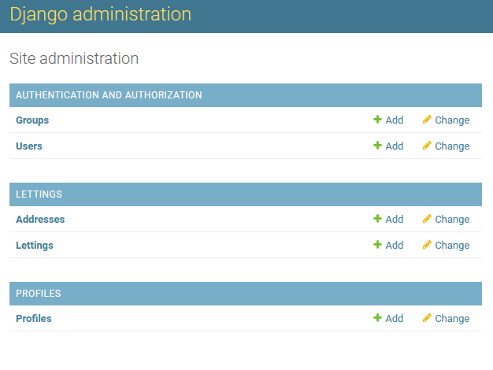

Database structure and models
The code has been split in 3 different apps vs only one in the old version :
lettings
oc_lettings_site
profiles
Each new app has 5 main modules as below :
admin.py for the representation in admin page
apps.py for the app namespace
models.py for the models used by the database (except for oc_lettings_app)
urls.py for the urls
views.py for the views
Lettings models
In the lettings models there are 2 objects with all attributes regarding the address and letting, previously implemented in the first version of the application :
Address object
Attribute |
Type |
|---|---|
number |
PositiveIntegerField |
street |
CharField |
city |
CharField |
state |
CharField |
zip_code |
PositiveIntegerField |
country_iso_code |
CharField |
Letting object
Attribute |
Type |
|---|---|
title |
CharField |
address |
OneToOneField to Address |
Oc_lettings_site models
No models are currently available in this application in its new version.
This Django app serves only as an entry point of the web application and for Django settings.
Profiles models
In the profiles models, there is 1 object with all attributes regarding the profiles previously implemented in the first version of the application :
Profile object
Attribute |
Type |
|---|---|
user |
OneToOneField to User |
favorite_city |
CharField |
Database admin page
Here is a screenshot from the database admin page :
